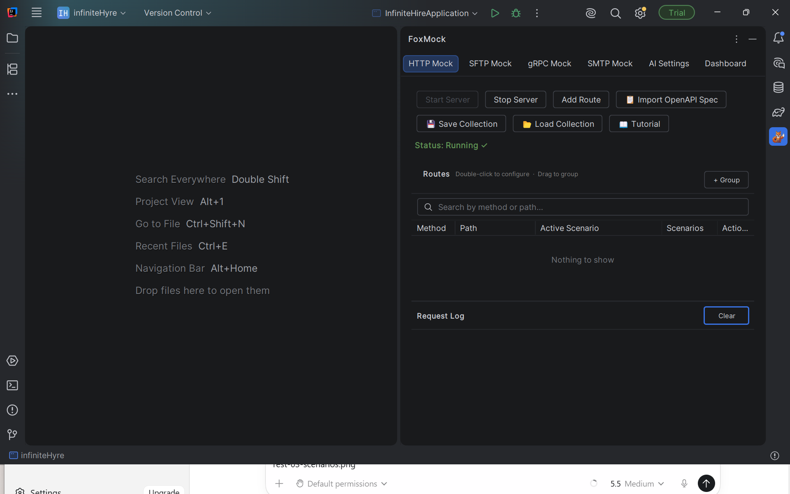
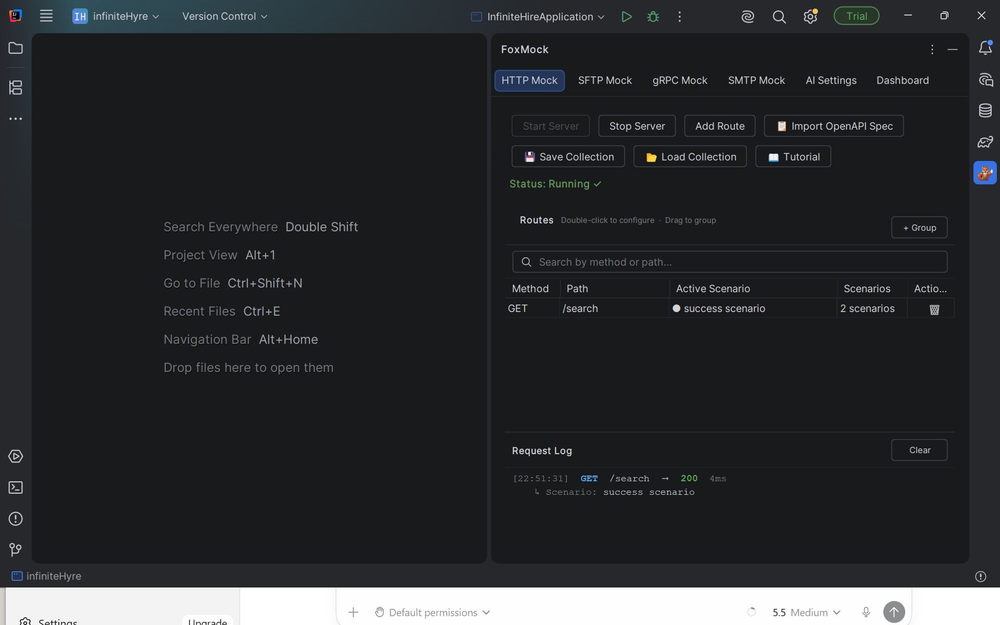
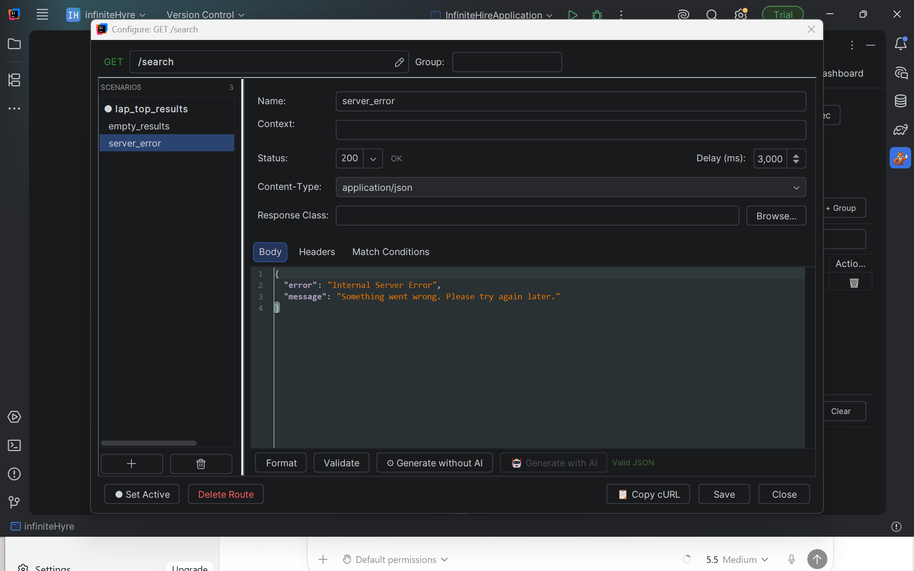
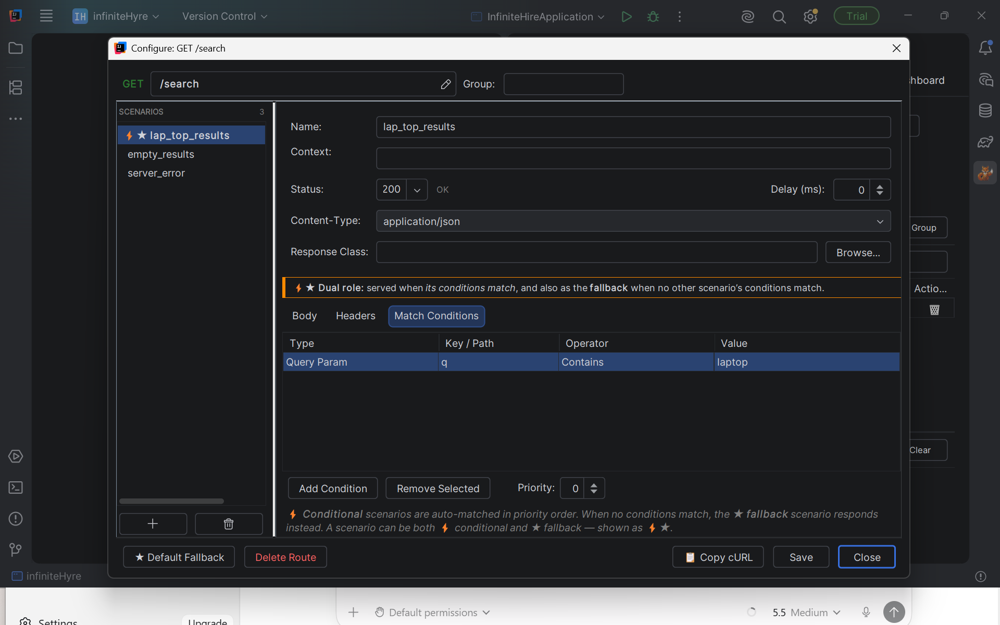
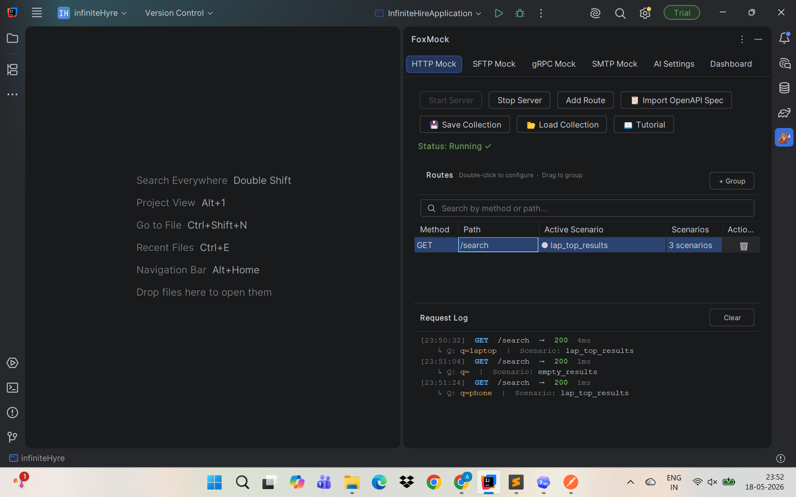

How to Mock REST APIs with Query Params & Scenarios in IntelliJ
Your frontend needs a search endpoint that isn't built yet. Your integration tests need to simulate
a 500 error from a third-party API you don't control. Your QA team needs to reproduce an edge case
that only happens when a specific query parameter is present.
FoxMock is a free IntelliJ IDEA plugin that solves all three — without leaving
your IDE. Define routes, attach multiple named scenarios, match conditions on query parameters, and
switch responses with one click. No Node.js, no Docker, no WireMock config files.
Installation
- Open IntelliJ IDEA
- Go to File → Settings → Plugins (macOS: IntelliJ IDEA → Settings → Plugins)
- Open the Marketplace tab and search for FoxMock
- Click Install, then restart the IDE
Or install directly:
After restarting, open the FoxMock tool window at the bottom of the IDE (or View → Tool Windows → FoxMock) and select the HTTP Mock tab.

FoxMock tool window — HTTP Mock tab with empty route table
Add your first route
We'll mock a GET /search endpoint that returns product results. Click Add Route.
Fill in the route dialog:
- Method:
GET - Path:
/search
In the Response tab of the scenario editor, set Status to
200 and paste this JSON body:
{
"results": [
{ "id": 1, "name": "Laptop Pro 15", "price": 1299.99 },
{ "id": 2, "name": "Ultrabook Air", "price": 999.99 }
],
"total": 2,
"query": "laptop"
}
Name this scenario laptop_results. Click Save.
Click Start Server. The status label changes to Status: Running — port 8090.

HTTP Mock panel — Status: Running, one route in the table
Test it:
curl -s "http://localhost:8090/search?q=laptop"
You should get the JSON body you configured back immediately.
How query parameters work
FoxMock's route matching is path-only by default. The route GET /search
matches any request to /search regardless of what query parameters are present —
?q=laptop, ?q=phone&page=2, or no params at all.
This means one route covers all variations of the endpoint. You can then use conditions on individual scenarios to serve different responses based on specific query parameter values — without creating separate routes for each combination.
Query params in the Transaction Log
Every request is logged in the Transaction Log pane at the bottom of the HTTP Mock panel. For parameterized requests the log shows the query string inline:
[11:20:16] GET /search → 200 13ms
↳ Q: q=laptop
[11:20:31] GET /search → 200 8ms
↳ Q: q=phone&page=2
The Q: prefix marks the decoded query string. Use this to confirm FoxMock is
receiving the parameters your app is sending before you write any conditions.
Create multiple scenarios
A scenario is a named response configuration attached to one route. A single route can have as many scenarios as you need — each with its own status code, headers, body, delay, and match conditions.
For a search endpoint, a typical set looks like this:
laptop_results200Happy path — returns product list
empty_results200Valid query, nothing found
server_error500Simulate a backend failure
slow_response2003 000 ms delay — timeout testing
Adding a scenario
- Double-click the
GET /searchrow (or right-click → Configure…) - Click Add Scenario in the scenario list on the left
- Name it
empty_results - Set Status to
200and paste the response body:
{
"results": [],
"total": 0,
"query": "unknown"
}
Click Save. Repeat for the remaining scenarios:
server_error — Status 500, body:
{
"error": "Internal Server Error",
"message": "Something went wrong. Please try again later."
}
slow_response — Status 200, same body as
laptop_results, Delay set to 3000 ms.

Configure dialog for GET /search — four scenarios in the list
Switch scenarios manually
The scenario marked ● is the one currently being served. You can switch the active scenario at any time — without restarting the server — and the change takes effect on the very next request.
How to switch:
- Double-click the route row (or right-click → Configure…) to open the Configure dialog
- Select the scenario you want to activate from the list on the left
- Click ● Set Active
- Close the dialog — done. The route table immediately shows the new active scenario name in the Active Scenario column
The Active Scenario column in the route table always reflects the current Tier 2 fallback at a glance, so you never need to open the dialog just to check which scenario is live.
Try it with curl to see the change take effect immediately:
# Set server_error active, then:
curl -s "http://localhost:8090/search?q=laptop"
# → {"error":"Internal Server Error","message":"Something went wrong..."}
Conditional auto-switching by query param
Manual switching is useful for exploratory testing. For automated tests you need the mock to return different responses based on what the caller sends — automatically, without any human intervention. That's what conditional scenarios are for.
Conditions are rules attached to a scenario. When a request arrives, FoxMock evaluates all conditional scenarios in priority order. The first one whose conditions all pass is served. Everyone else gets the manually active scenario.
Example: serve different results based on the q param
We want:
?q=laptop→laptop_results(200, full list)?q=(empty) or missing →empty_results(200, empty list)- anything else → the active fallback scenario (currently
laptop_results)
Step 1 — Add a condition to laptop_results
- Open the Configure dialog for
GET /search - Select the
laptop_resultsscenario - Click the Conditions tab
- Click Add Condition
- Fill in the row:
- Type:
Query Param - Key / Path:
q - Operator:
Contains - Value:
laptop
- Type:
- Click Save

Conditions tab — Query Param / q / Contains / laptop
The scenario now shows a ⚡ badge in the list — indicating it has at least one condition.
Step 2 — Add a condition to empty_results
- Select the
empty_resultsscenario - Click the Conditions tab → Add Condition
- Fill in:
- Type:
Query Param - Key / Path:
q - Operator:
Equals - Value: leave blank (empty string)
- Type:
- Click Save
Step 3 — Test it
# Matches laptop_results condition → laptop list curl -s "http://localhost:8090/search?q=laptop" # Matches empty_results condition → empty list curl -s "http://localhost:8090/search?q=" # No condition matches → falls back to active scenario curl -s "http://localhost:8090/search?q=phone"
No code change, no server restart — FoxMock routes each request to the right scenario automatically.
All condition types available for REST routes
q, page, sort
Authorization, X-User-Id
$.role, $.user.id
.*error.*
{"action":"ping"}
Operators
- Equals — exact match (case-sensitive)
- Contains — substring present anywhere in the value
- Matches (regex) — full regex match against the value
- Exists — the parameter or field must be present (value is ignored)
Multiple conditions on one scenario use AND logic — every condition must pass. Use the Priority spinner to control which conditional scenario wins when more than one could match the same request.
Three-tier resolution explained
Every incoming HTTP request goes through this logic in order:
Scenario badges in the list reflect this:
- ● — this is the active Tier 2 fallback
- ⚡ — this scenario has at least one condition (participates in Tier 1)
- ⚡● — conditional and also the active fallback
- gray / italic — disabled, skipped entirely
Disabling a scenario
To take a scenario out of rotation without deleting it:
- Open the Configure dialog
- Select the scenario
- Uncheck Enabled
- Click Save
The scenario turns gray and italic. FoxMock skips it at all three tiers — conditions are not evaluated, and it is never used as the Tier 2 fallback. Re-enable it by ticking the checkbox.
This is useful for keeping a server_error scenario defined but inactive during
normal development, and enabling it only when you want to test your error handling.
Transaction Log
The Transaction Log pane at the bottom of the HTTP Mock panel records every request FoxMock receives. Each entry shows:
- Timestamp
- HTTP method and path
- Response status code
- Duration in milliseconds
- Query string (prefixed
Q:) - Which scenario was matched
[11:20:16] GET /search → 200 13ms [laptop_results]
↳ Q: q=laptop
[11:20:31] GET /search → 200 8ms [empty_results]
↳ Q: q=
[11:20:44] GET /search → 500 5ms [server_error ●]
↳ Q: q=phone
The log is your first debugging tool. If the wrong scenario is being served, look at which scenario name appears in brackets and compare it with your condition rules.

Transaction Log — three requests, different scenarios matched
Save & load collections
Your entire mock setup — all routes, scenarios, conditions, priorities — can be saved to a
.foxmock JSON file and restored at any time.
Save
- Click 💾 Save Collection in the HTTP Mock panel
- Choose a filename and location (e.g.
search-api.foxmock)
The file looks like this:
{
"name": "Search API",
"version": "1.0",
"routes": [
{
"method": "GET",
"path": "/search",
"activeScenario": "laptop_results",
"scenarios": [
{
"name": "laptop_results",
"enabled": true,
"statusCode": 200,
"delayMs": 0,
"responseBody": "{\"results\":[...],\"total\":2}",
"matchConditions": [
{
"type": "QUERY_PARAM",
"key": "q",
"operator": "CONTAINS",
"value": "laptop"
}
],
"priority": 0
},
{
"name": "empty_results",
"enabled": true,
"statusCode": 200,
"delayMs": 0,
"responseBody": "{\"results\":[],\"total\":0}",
"matchConditions": [
{
"type": "QUERY_PARAM",
"key": "q",
"operator": "EQUALS",
"value": ""
}
],
"priority": 1
},
{
"name": "server_error",
"enabled": false,
"statusCode": 500,
"delayMs": 0,
"responseBody": "{\"error\":\"Internal Server Error\"}",
"matchConditions": [],
"priority": 0
}
]
}
]
}
Load
- Click 📂 Load Collection
- Select the
.foxmockfile
All routes and scenarios are restored exactly as saved. Commit the .foxmock file to
version control — your whole team loads the identical mock setup in two clicks.
Troubleshooting
404 — No mock route configured
FoxMock received the request but has no route for that method + path combination. Check the route
table: the method must match exactly (GET is not POST) and the path must
match including leading slash. Wildcards work: /search/* matches
/search/anything.
Wrong scenario is being served
Check the Transaction Log — the scenario name in brackets shows exactly what was matched. Then open
the Configure dialog and verify: (1) the correct scenario has conditions that match the request,
(2) the scenario is enabled, (3) priority is set correctly if multiple conditions could match.
Condition not matching
Query parameter matching is case-sensitive. q=Laptop does not match a condition with
value laptop and operator Equals. Use Contains or
Matches (regex) with (?i)laptop for case-insensitive matching.
Connection refused
The server is not running. Check the status label — click Start Server if it says
Stopped. Confirm the port in FoxMock matches the port your client is connecting to
(Settings → Tools → FoxMock → HTTP Port).
Port already in use
Another process is using port 8090. Change the port in Settings → Tools → FoxMock →
HTTP Port and update your client accordingly.
That's everything. One route, four scenarios, query-param-driven auto-switching — and the whole setup saved to a single file your team can share. FoxMock handles the rest.
Want to mock gRPC too?
FoxMock supports REST, gRPC, SFTP and SMTP — all inside IntelliJ.